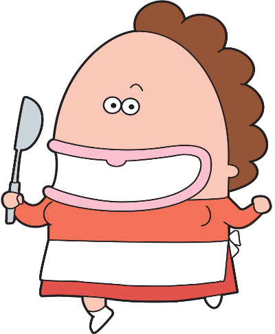
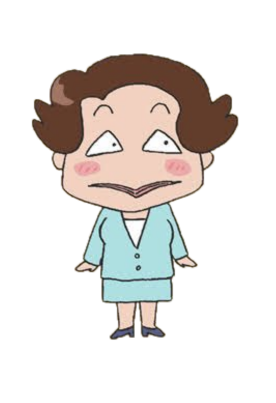
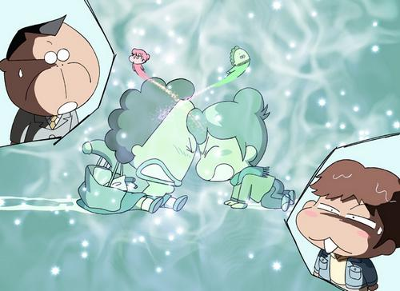
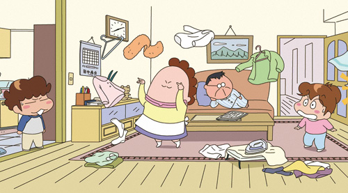

故事介紹
日文：あたしンち
漫畫作者：螻榮子
漫畫數：760回
出版社：東立出版社
連載期間：1994年6月5日－2014年11月21日
動畫編劇：高橋奈津子
動畫數：331回
播放時間：2002年4月19日－2009年9月19日
簡介
我們這一家是以一個普通的平凡小家庭，花家的家庭成員(花爸、花媽、橘子、柚子)，所編織而成的日常故事，描寫其家庭成員間的親情、友情、價值觀，以及日常生活中的點點滴滴。
最早由Eiko Kera老師連載於《讀賣新聞》的四格漫畫。以多段全彩四格漫畫組成一回、每回共23格，目前已經發行到第17冊（2012年8月發行）。
作者けらえいこ在 Twitter 上表示，在最初開始創作《我們這一家》時，她是以自己作為作中的高中生「橘子」的視點出發，然而隨著時間的流逝，不知不覺間自己也開始使用母親的視點進行創作，到現在的自己甚至比原作作中爸爸的年紀還要大了，因此也對於作品未來方向感到迷惘。
角色介紹

本名立花翠。
43歳。角色形象參考自原作者螻榮子的母親。
身高：160公分，體重：75公斤左右。
生日：3月23日，血型O型。
有著不認輸的精神，對自己的外貌和所作所為往往頗具信心，凡有堅持的目標就要做到最後，而因此般堅持換來弄巧成拙的結果亦不在少數。
矛盾的是本身也抱持「最好的人生有如平坦緩坡」與「凡事不該執著於某樣事物」的價值觀。
本名立花仁
大約45歲~50歲間。角色形象參考自原作者螻榮子的母親。
身高：165公分，體重：78公斤。
生日：1月11日，血型B型。
對許多事情興趣缺缺，不怎麼關心，但對老婆的奇特或誇張行為卻經常抱持著看笑話態度，當作娛樂看待。
沉默寡言、我行我素，通常對事物的各種情緒和動作反應十分平淡，行事作風有著傳統大男人風格。


立花蜜柑（花橘子）
大約17歲。
身高：155公分，體重：60公斤。
生日：8月5日，血型O型。
花爸與花媽的女兒、柚子的姐姐、家中的長女，高中二年級學生（原作初期是高中一年級）。
喜歡泰迪熊。在學校參加的社團是「泰迪熊研究社」，簡稱「熊研」。
個性冒冒失失，只要出遊一定會受很多傷。暗戀同班同學岩木，而在橘子眼中，岩木彷彿是會發光的天使。
立花柚彥（花柚子）
大約14歲。
身高：151公分，體重：50公斤。
生日：7月6日，血型B型。
花爸與花媽的兒子、橘子的弟弟、家中的老么，中學二年級學生（原作初期是中學一年級）。
有著成熟思想與深奧的內心世界，表面上是話不多「內心話」卻特別多和極端害羞的人，
喜歡在私底下耍酷，甚至常為雞毛蒜皮的小事感到尷尬並逞強。

岩木（岩木くん）
橘子的同學。
個性溫和又有點天然呆，有時會有點女性化思考。與吉岡是哥倆好。身高頗高。
曾經在公車上幫橘子撿起掉在地上的筆，而成橘子的暗戀對象。
常常因為每天心情不同而訂定新的口頭禪。
小清（しみちゃん）
和橘子交情最好的同學，個性成熟而穩重。
經常會深入思考與談論些內心世界方面的問題，而且懂得很多「知識」，很受橘子仰慕。
說完一些很有深度的話後，習慣撥一下頭髮或裝出吸菸後吐一口煙的動作。
嘴巴被花媽認為像章魚嘴，曾一度被肚子餓的橘子認為像烏魚子。

水島太太（水島さん）
花媽的好朋友之一。
在橘子小學時的家長會相識後意氣投合，當時因為是像河童的髮型被花媽看成河童。
因為家裡也有個孩子，所以總是能和花媽閒聊許多關於子女、家庭、生活方面的小事，也是最能明白花媽感受與心思的人。
花媽曾將自己、她和戶山太太合稱為「三大美人」。
口頭禪是：「唉呀！」
戶山太太（戸山さん）
花媽的好朋友之一。
個性比較沉穩而理，但和花媽與水島太太聊天或討論事情時，通常顯得很激動。
與花媽和水島太太會定期舉辦旅行，也經常與她們倆一起參加活動，曾被橘子稱為「歐巴桑三人遊」。
口頭禪是：「唉呀！這樣很好啊！」
劇場版
我們這一家劇場版

花媽因為在雷雨天一時出去沒帶傘，就向橘子要求把傘給帶過來，然而在人行天橋上見面時因為天雨路滑雙方朝著中間腳滑了過去。
此時天橋被閃電打中外加上雙方剛好撞上額頭而對調身體，就這樣兩人開始了各自不同的習慣與生活。
有一天，在校外旅行為契機下母子兩人遇到了一名與鴿子對調身體的中年男子，與花家母女的情形略為相同，同時柚子找到了可以換回來的方法，但是代價相當大，花媽和橘子兩人能夠順利換回身體嗎？
我們這一家：超能力花媽!

在某一天的早晨，花媽睡醒後立刻起身，並覺得很舒暢，想說今天應該會是好日子。隨著事事順利的狀態下，讓她覺得可能會有好事發生。
但沒想到，一個突如其來的閃電不偏不倚地打中花媽。這個意外也讓她突然有了超能力，更發展出許多特別的事情。
配對遊戲

參考資料
HTML5 UP!
維基百科
我們這一家維基百科列表
台視官網
竹教大範例網頁